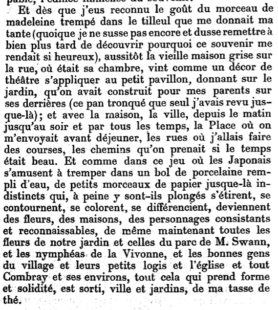
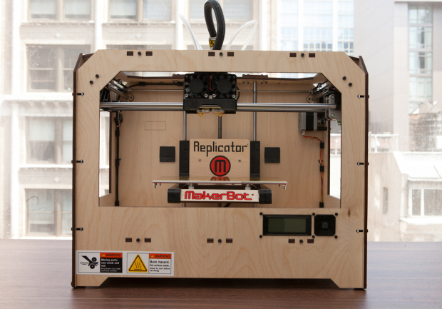
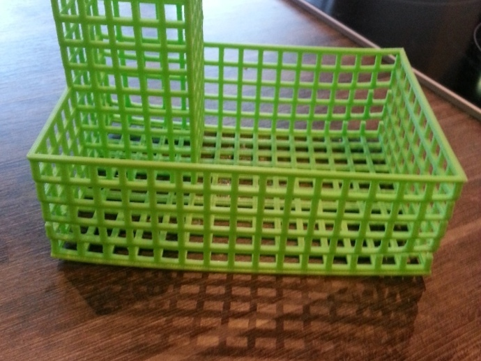
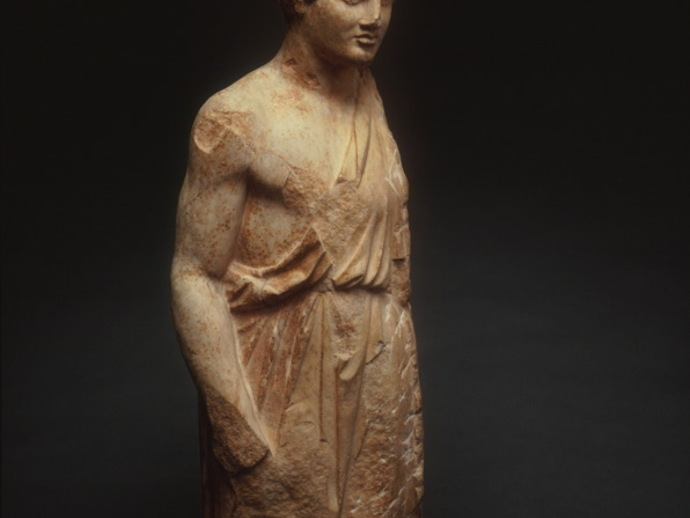
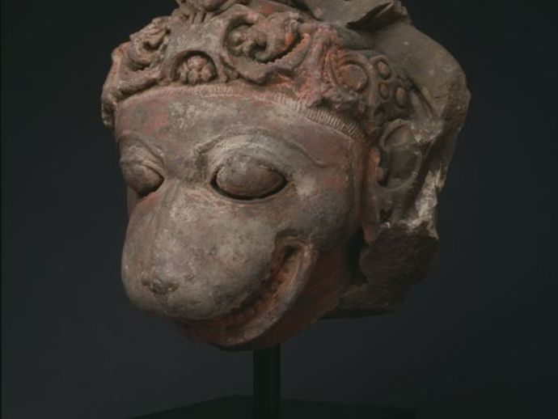

While reading Everyday Aesthetics, I was particularly struck by the overlap between Saito’s conceptualization of moral-aesthetic judgments and theories of classification. As Saito explains, the encounter with the aesthetic properties of everyday things--from built environments and household objects to the houses, offices, and clothing of others--operates as an event through which we negotiate our own subjectivity. She writes: “It is undeniable, however, that our judgments on the built environment are often inseparable from our judgments on the moral, social, political values of its cause and/or effect." (216) From a sociological perspective, the moral-aesthetic judgment as it is described here functions much like Pierre Bourdieu’s concept of classification. For Bourdieu, everyday acts of classification work as relational encounters through which we negotiate distinctions of class. As he writes:
The classifying subjects who classify the properties and practices of others, or their own, are also classifiable objects which classify themselves (in the eyes of others) by appropriating practices and properties that are already classified (as vulgar or distinguished, high or low, heavy or light etc.—in other words, in the class analysis, as popular or bourgeois) according to their probably distribution between groups that are themselves classified. (484)
Although Bourdieu is more interested in exploring notions of class, his deployment of the sense of taste, I believe, enriches Saito’s approach to everyday aesthetics. As both he and Saito explain, our classification of the aesthetics of our everyday encounters and environments, our judgments directed at the others around us, also reflect back upon ourselves. For instance, I deplore my coworker’s office because I associate messiness with a lack of self-discipline; my own office, on the other hand, is very orderly, and I always wear a clean-pressed shirt and polished shoes to work. In making these aesthetic classifications, I expect that my coworker will classify herself in relation to myself, recognizing my own taste as representative of the self-discipline I seek to embody. By invoking Bourdieu to conceptualize moral-aesthetic judgments, I seek to emphasize the subjective and embodied nature of the aesthetic lives of objects. The ways in which we physically interact with everyday objects reveals aspects of our own worldview.
The act of classification thus expands the everyday aesthetic encounter across a range of scales, as our global conceptions of space, time, geography, and social difference (to name but a few options) are conducted through our moral-aesthetic judgments of daily objects. As Geoffrey Bowker and Susan Leigh Star suggest in Sorting Things Out: Classification and It’s Consequences: “A classification is a spatial, temporal, or spatio-temporal segmentation of the world.” (10) They continue to suggest that classification works through “the relationship (first conceptualized as a kind of gap) between formal systems of knowledge representation and informal, experiential, empirical, and situated experience.” (193) Bringing the situated, embodied, and tacit experience of classification to bear on Saito’s deployment of moral-aesthetic judgments allows us (and I believe Saito supports such a view) to read the aesthetic experience of everyday objects as acts through which larger subjectivities of self, world, and other are constantly (re)negotiated. Focusing on the subjective experience of space and time, I would like to investigate two encounters with everyday objects that negotiate modernist constructions of geotemporality. First, I will discuss Proust’s experience of involuntary memory in In Search of Lost Time, focusing on cubist and impressionist experiences of environments. I will then consider the everyday aesthetics of 3D printed objects, and conclude by exploring methods for using 3D printing to access modernist representations of lived time and space.
And once I had recognized the taste of the crumb of madeleine soaked in her decoction of lime-flowers which my aunt used to give me (although I did not yet know and must long postpone the discovery of why this memory made me so happy) immediately the old grey house upon the street, where her room was, rose up like the scenery of a theatre to attach itself to the little pavilion, opening on to the garden, which had been built out behind it for my parents (the isolated panel which until that moment had been all that I could see); and with the house the town, from morning to night and in all weathers, the Square where I was sent before luncheon, the streets along which I used to run errands, the country roads we took when it was fine. And just as the Japanese amuse themselves by filling a porcelain bowl with water and steeping in it little crumbs of paper which until then are without character or form, but, the moment they become wet, stretch themselves and bend, take on colour and distinctive shape, become flowers or houses or people, permanent and recognisable, so in that moment all the flowers in our garden and in M. Swann's park, and the water-lilies on the Vivonne and the good folk of the village and their little dwellings and the parish church and the whole of Combray and of its surroundings, taking their proper shapes and growing solid, sprang into being, town and gardens alike, from my cup of tea. (Proust 64)
 The main narrative force on Proust’s novel is set into motion by the everyday event of dipping a madeleine in a cup of tisane. Here, Proust’s experience of tasting the mixture recalls his earlier lived experience of drinking tea at his aunt’s house as a child, prompting the involuntary, embodied memory of his childhood that begins the bulk of the novel. The elevated, or extraordinary description of this everyday gustatory act occupies the tension between art and the everyday described by Saito1 and could perhaps be characterized as a moment guided by wabi-like sensibilities. At the same time, Proust’s aesthetic experience of the tea invokes larger classifications of space, time, and self, as it negotiates memories of his childhood village. I would therefore like to investigate this aesthetic encounter in its metonymic relation to subjective representations of geotemporality.
In the madeleine scene, Proust’s fragmented, disjointed experience of extracting memories from his tea demonstrates what Saito describes as “the temporal dimension of experience.” Proust evokes his childhood memories by slowly taking one sip of tea after another, using the temporal space of his encounter with the tea as a venue for accessing the larger, lived time and spaces of his childhood. The narrative and aesthetic process by which Proust gleans isolated fragments of his childhood before revealing the full scene of Combray at the end (which continues in the following portion of the novel) recalls Saito’s description of Japanese gardens, which play with partial views of landscape for dramatic effect2. The temporal unfolding of Proust’s gustatory experience also brings to mind Saito’s description of Japanese cooking, and tea in particular. She writes:
The sensibility of the cook is reflected in the careful spatial arrangement on the plate, which sets the stage for us to compose our own gustatory symphony...Graham Parkes aptly describes this aesthetic effect: ‘The meal can then be appreciated as a multilayered process rather than a single linear event.’ (231)
The connection between Proust’s aesthetic techniques in representing his experience of drinking tea and Saito’s characterization of Japanese design is not incidental. Proust’s writing, and his reference to Japanese aesthetics in the madeleine scene, is marked by the influence of japonisme, which refers to the influence of Japanese art on turn-of-the-century French art, including cubist and impressionist painters and authors, such as Proust. Although the purpose of my paper is not to investigate the histories of Japanese design and japonisme in France, they do share a common aesthetic investment in subjective, temporal experiences of environments. While cubist and impressionist representations take up subjective positions relative to their subject (emphasizing incomplete views and embodied perspectives), Proust’s lived, incomplete view of his childhood village (as it emerges in bursts of disjointed times, faces, and locations from memory) also represents the subjective experience of lived space, rather than whole, objective, or totalizing views of Cartesian, geographic space. In other words, the temporal dimension of Proust’s everyday aesthetic encounter recapitulates larger, subjective experiences of inhabited geography.
Reading the madeleine scene through Saito’s everyday aesthetics suggests that encounters with common objects also function as aesthetic experiences that work through subjective and embodied notions of time, space, and place. However, locating this experience cleanly within the realm of the everyday poses an issue. Although Proust frames his experience of drinking tea as a quotidian event, and his reaction demonstrates the heightened aesthetic sensibility that Saito believes can exist (if only temporarily) as part of everyday experience, the status of the experience as literary still suspends it within the world of art. Even though the event represented is of the everyday, the literary framework in which it is embedded (and through which Proust’s aesthetic rendering of subjective time is read) classifies it as art. After all, it is Proust’s embodied experience we are considering rather than our own, and the subjective experience of lived time at hand here still exists at the level of artistic representation, removed from our own bodily experience. With this consideration in mind, I would like to turn from modernist representation to recent advances in 3D printing, with the goal of considering object fabrication as a method for accessing modernist experiences of lived space.
 Desktop fabrication (also known as 3D printing) is currently entering the household space, allowing anyone with a computer and a 3D printer (which can now be purchased for 200 dollars) to fabricate their own objects. These objects range from the utilitarian to the decorative, including sink stoppers, dish racks, egg holders, keychains, superhero figures, jewelry, replacements for lost screws, and toys for children. In other words, the advent of do-it-yourself fabrication is changing the everyday aesthetics of domestic space (and giving added significance to Saito’s concept of “built environments,” since it enables users to fashion and customize objects traditionally manufactured outside the home). A home filled with fabricated objects may remind us of the knick-knacks that signified the taste of the modernist nouveau riche, or we may classify fabricated objects as a sign of the wealth associated with technological access and savoir faire. Does the fact that these object are usually fabricated using recyclable PLA plastic, meaning they can be recycled and replaced (rather than sent to a landfill and re-purchased), allow us to classify the everyday practice of domestic 3D printing as a instance of Saito’s green aesthetics? Also ripe for consideration is how we classify the labor required to produce these objects, since users must model an object and wait as layers of melted PLA or ABA plastic are laid on top of each other by a heated extruder. Is 3D printing a new form of domestic labor or is it conspicuous leisure?
|  |
In addition to everyday objects, however, desktop fabrication is also being used to replicate art objects. The Art Institute of Chicago has released 3D models of sculptures in its holdings, which can be downloaded and printed free of charge. These 3D replicas straddle the distinction between art and the everyday--they can be fashioned at home and integrated into any built environment; they can be held and manipulated however we choose. Yet despite the democratization of art afforded by desktop fabrication, the process still works to hold the piece in stasis. The plastic model is merely a synecdoche for its counterpart chiseled into rock, inviting us to appreciate its artful features. Despite the required labor to produce and the everydayness of these replicas, the object itself is still immobilized against time, and rather than respecting the materials of production at hand (melted plastic), the materiality of the fabricated model is simply a substitute for the real thing.
|  | |
|  |
The materiality of these fabricated models does, however, assert itself when printing goes wrong. Failed prints demonstrate truth to materials in a way that purely substitute objects, standing in for objects that exist elsewhere, do not. The strangeness of these objects invites further inquiry, focusing particularly on the temporal construction of the object’s spatial properties (since objects are created over time as plastic as laid down in layers by the heated extruder). Much like the incomplete views provided by modernist art, which use spatial distortion to represent the temporal experience of objects and environments, failed prints call attention to their temporality by inviting us to reconstruct the duration over which things went wrong. The strangeness of these artifacts, much like the defamiliarizing techniques of cubism and impressionism, ask us to consider the material particulars of the object, focusing on the interrelation between time and space, rather than abstracting the art object as something whose aesthetic properties are disembodied, atemporal, and purely visual or auditory (rather than tangible, material, and mutable).
The spatio-temporality of warped and distorted 3D prints functions much like Proust’s experience of his tea in In Search of Lost Time (and Saito’s temporal conception of spatial arrangement). In both instances, the strangeness of our aesthetic encounter with the object invites a tacit, embodied experience of working through constructions of space and time. With this in mind, I would like to consider the possibility of using principles of everyday aesthetics to model and replicate modernist experiences of embodied, subjective time.
Rather than suspending modernist representations of everyday aesthetics within the realm of art (which I believe Proust’s novel, as an instance of high literary modernism, does), 3D modeling and desktop printing offer new methods for working with modernist aesthetics in an everyday setting. With this goal in mind, my colleague Katie Tanigawa and I prototyped a 3D printed, tactile map that represents the subjective experience of modern geography. Focusing on the lived, quotidian time of Joyce’s Ulysses, we designed a 3D printable map that uses warping and distortion to represent the amount of time spent in each section of Joyce’s Dublin. The prototype was developed by taking a high-resolution scan of a historical map of Dublin and carving it into a 3D plane; the plane was then warped vertically in order to account for the amount of time spent in each section of the city. The result is meant to represent the subjective, temporal experience of geography in the novel; at the same time, the map’s aesthetic design accesses temporality through the spatial arrangement of its component materials. Taking modernist methods of representing lived, embodied time (demonstrated by the defamiliarizing effects of cubism and impressionism at work in Proust), Katie and I attempted to fashion a hands-on, tacit experience of modernist temporality.
The defamiliarized landscape of Dublin is meant to invite embodied forms of inquiry that investigate the aesthetic properties of the object in order to understand modernist deformations of Cartesian geography. The distortions in the landscape are guided by truth to materials, since the details that make up the haystacks are grain from the original 1925 map that have been rendered in three dimensions. Furthermore, printing the haystacks using a 3D printer would either require splitting them into component layers (to be stacked atop one another) or allowing the heated plastic to distort and deform as small layers bent under the weight of heavier, higher layers. In these instances, investigating the spatial arrangement of the deformed, subjective landscape prompts inquiry into the time taken to build the printed map. Much like Proust’s tea, the embodied aesthetic encounter with the map is meant to work through local experiences of space and time that open inquiry into the modernist representation of subjective temporality and geography at a large scale. In this instance, the modernist representation of inhabited environments is deployed as a method for producing built-media that facilitates tacit, everyday encounters with modernist techniques (and facilitates arguments about the modernist experience of time). Keeping everyday aesthetics in mind, I am therefore curious how 3D printing can be used to build artifacts that bring modernist aesthetics into the realm of the everyday, using literary techniques to structure hands-on aesthetic encounters that both display and perform arguments about the subjectivities of everyday modernist experiences.
Works Cited
Bourdieu, Pierre. Distinction: A Social Critique of the Judgment of Taste. Trans. Richard Nice. London: Routledge, 2010. Accessed 1 August, 2013. Web. http://books.google.ca/books?id=TJp7hqxQ0SUC&printsec=frontcover&dq=distinction&hl=en&sa=X&ei=1of8UYquNoH7igLb0YCoAg&redir_esc=y#v=onepage&q=distinction&f=false
Bowker, Geoffrey C. and Susan Leigh Star. Sorting Things Out: Classification and Its Consequences. Cambridge, MA: MIT P, 1999. Print.
Proust, Marcel. In Search of Lost Time: Swann’s Way, Vol. 1. Trans. C.K. Scott Moncrieff. New York: Modern Library, 1998. Print.
Proust, Marcel. Du Côté de Chez Swann. Paris: Grasset, 1914. Accessed 1 August, 2013. Web. http://gallica.bnf.fr/ark:/12148/bpt6k80736j
Saito, Yuriko. Everyday Aesthetics. Oxford: Oxford U P, 2007.
Notes
1Saito writes: “I believe that one of the projects of everyday aesthetics is to discern when we should render the ordinary extraordinary so that we can derive the maximum aesthetic value and when we should rather preserve and focus on the ordinary, seemingly non-aesthetic, reaction. Indiscriminate aestheticization can lead us far from our aesthetic life in its very everyday life context, making it more art-like experience, when extricating everyday aesthetics from art-like experience is one of its raisons d'être in the first place." (245)
2Saito explains: "Japanese gardens are often constructed by intentionally blocking or partially obscuring a scenic view or a tea hut by dense planting, giving us only its hint and glimpse. Anticipation of being able to take in a full view excites us and invites us to proceed, and the final, usually sudden, encounter with the full vista is quite dramatic." (229)